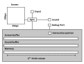
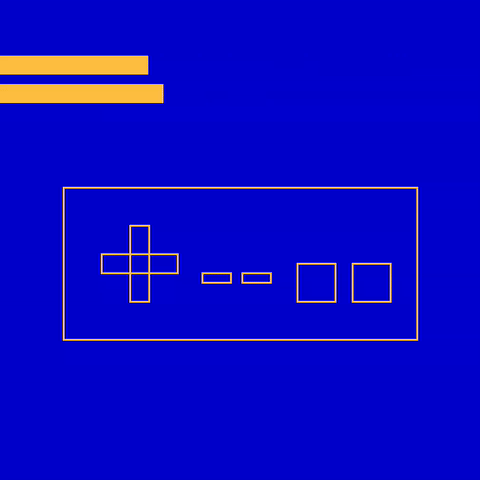
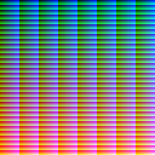

This is the specification for an extremely simple "virtual computer" that can be emulated.
There are two primary goals:
I do not want to provide an assembler, any kind of compiler, or even any ideas about things like call conventions. The idea is that you have to build that yourself. You can play the example game above to get an idea of what can be built.
[!WARNING] For a complete description of the system, please download the PDF.
There are no CPU registers, just one chunk of memory. Values can be loaded from every memory address and written to every memory address.
Everything is represented as an unsigned 16-bit integer. That includes numbers, addresses, colors, the instruction pointer and the input.
All numerical operations are wrapping operations.
The main memory contains one valid address for every u16. The screen-buffer is the same size as the memory and there is one pixel for every u16.
There are as few features as possible. That means limited input, no file system access, no variable display size etc. It also means that there are no accelerators or tricks to help with performance.
Here is a sketch of all components of the virtual computer:

The shaded section indicates what is visible to the virtual machine while the parts outside are handled by the emulation.
The instruction pointer represents an address in main memory. It starts as zero. Then, it is manipulated by the instructions.
The screen has a resolution of 256 × 256 = 216 pixels. The color of each pixel is represented with 16-bits using RGB565.
The coordinate (x,y) of the screen maps to the index 256y+x in the screen-buffer. The coordinate (0,0) is in the upper left-hand corner. Changes to the screen-buffer are not reflected on the screen until the system is synchronized.
Sounds can be played by constructing a waveform in the sound buffer. There are no built-in samples.

The only supported inputs are the mouse position and a list of eight keys. These keys are supposed to represent the face buttons of an NES controller. The codes for the A and B keys also represent the left and right mouse buttons.
When the console synchronizes, the screen-buffer is drawn to the screen and the input-buffer is updated. The system will be put to sleep until the beginning of the next frame. The targeted timing is 30fps. There is a hard limit of three million instructions per frame.
All instructions are 4 values long. A value is, of course, a u16.
The instructions have the form opcode arg1 arg2 arg3.
In the following table, all instructions are listed. @arg1 refers to the value at the memory address arg1.
[!NOTE] You can have data blobs in the binary that do not correspond with the opcodes. This is fine until and unless you explicitly try to run this blob of data as code.
| Opcode | Name | Advances | Effect |
|---|---|---|---|
| 0 | Set | yes | if arg3{@arg1=inst_ptr}else{@arg1=arg2} |
| 1 | GoTo | if skipped | if(not @arg3){inst_ptr=@arg1+arg2} |
| 2 | Skip | if skipped | if(not @arg3){inst_ptr=inst_ptr+4*arg1-4*arg2} |
| 3 | Add | yes | @arg3=(@arg1+@arg2) |
| 4 | Sub | yes | @arg3=(@arg1-@arg2) |
| 5 | Mul | yes | @arg3=(@arg1*@arg2) |
| 6 | Div | yes | @arg3=(@arg1/@arg2) |
| 7 | Cmp | yes | @arg3=(@arg1<@arg2) as unsigned |
| 8 | Deref | yes | @arg2=@(@arg1+arg3) |
| 9 | Ref | yes | @(@arg1+arg3)=@arg2 |
| 10 | Debug | yes | Provides arg1,@arg2,@arg3 as debug information |
| 11 | yes | Writes value=@arg1 to index=@arg2 of buffer arg3 |
|
| 12 | Read | yes | Copies index=@arg1 of buffer arg3 to @arg2 |
| 13 | Band | yes | @arg3=@arg1&@arg2 |
| 14 | Xor | yes | @arg3=@arg1^@arg2 |
| 15 | Sync | yes | Puts @arg1=position_code, @arg2=key_code and synchronizes in that order. If arg3!=0, a sound is played. |
A program is just the initial state of the main memory. There is no distinction between memory that contains instructions and memory that contains some other asset. The initial state is loaded from a binary file that is read as containing the (little-endian) u16 values in order. The maximum size is 2 × 216 bytes (≈ 131.1kB). It can be shorter, in which case the end is padded with zeroes. The computer will begin by executing the instruction at index 0.
A simple example would be to print all 216 possible colors to the screen. We make our lives easier, by mapping each index of the screen-buffer to the color which is encoded with the index. Here, we use the names of the opcodes instead of their numbers.
Set 501 1 0 // Write the value 1 to address 501
Set 502 65535 0 // Write the largest possible value to 502
Print 500 500 0 // Display color=@500 at screen-index=@500
Add 500 501 500 // Increment the color/screen-index
Cmp 500 502 503 // See if we are not at the max number
Xor 503 501 503 // Negate it
Skip 0 4 503 // Unless we are at the max number, go back 4 instructions
Sync 0 0 0 // Sync
GoTo 0 0 0 // Repeat to keep the window open
We could rely on the fact that the value at index 500 starts at zero and we did not have to initialize it.
To build a program that we can execute, we could use python:
import struct
code = [
0, 501, 1, 0, #Opcodes replaced with numbers
0, 502, 65535, 0,
11, 500, 500, 0,
# ...
]
with open("all_colors.svc16", "wb") as f:
for value in code:
f.write(struct.pack("<H", value))
Inspecting the file, we should see:
➜ hexyl examples/all_colors.svc16 -pv --panels 1
00 00 f5 01 01 00 00 00
00 00 f6 01 ff ff 00 00
0b 00 f4 01 f4 01 00 00
03 00 f4 01 f5 01 f4 01
07 00 f4 01 f6 01 f7 01
0e 00 f7 01 f5 01 f7 01
02 00 00 00 04 00 f7 01
0f 00 00 00 00 00 00 00
01 00 00 00 00 00 00 00
When we run this, we get the following output:

First of all, if you managed to build a cool game or program for the system, please share it!
If you find a discrepancy between the specifications and the behavior of the emulator or some other problem or bug, feel free to open an issue. Please report things that are not explained well.